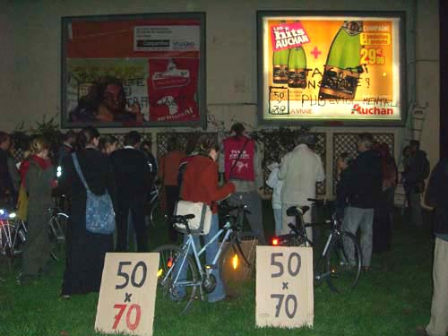

| |
Site dédié à la publication d'informations communiquées par le Collectif des déboulonneurs. En aucun cas ce site n'appelle à des actions illégales. | |
 |
||
|
Accueil du site > Lille > Compte-rendu des Déboulonneurs lillois 27 octobre 2006.
Vendredi 27 octobre 2006, 18h45 : les rues sont calmes, rien à signaler du côté de jean baptiste Lebas à Lille. 18h58 : en 10 minutes à peine, entre 40 et 50 personnes se rassemblent tranquillement, à pied ou à vélo. 2-3 journalistes et photographes sont là pour relayer la 2ème action du collectif des déboulonneurs de Lille. Alessandro, mégaphone en main, debout sur un tabouret, accueille les participants et la presse. Il rappelle les objectifs de l’action et explique comment celle-ci va se dérouler. Pendant ce temps, Thomas et Sylvia sont déjà rue de Cambrai, au pied de 2 magnifiques panneaux 4x3 animés et éclairés, n’attendant qu’une retouche de peinture... L’accueil terminé, tout le monde se met en route pour rejoindre les panneaux situés à deux pas du lieu de RDV. Thomas est déjà en haut de l’échelle, bombe à la main inscrivant les slogans tel que : "Pub = viol mental" , "50x70", "Halte au matraquage", "Tais-toi, consomme". Les sympathisants s’installent devant les panneaux, sur un petit espace enherbé, contemplant le barbouilleur en train de barbouiller. Pendant ces quelques minutes, Guillaume explique les motivations et les raisons de l’action, rappelant que dans d’autres villes au même moment des barbouilleurs agissent en plein jour. Quelques passants intrigués se mêlent au public ; distribution de tracts, échanges, discussion se déroulent dans une ambiance bon enfant. La police, qui était attendue puisque le lieu de rdv était annoncé à l’avance dans la presse, n’a même pas fait le déplacement. Le barbouillage terminé, applaudissements s’en suivent et un participant se lance à chanter la chanson du barbouilleur. Le public l’accompagne et applaudit à nouveau. 
La fin de l’action est annoncée, la dispersion s’ensuit, rien ne laisse paraître de ce rassemblement. Seuls brillent les slogans du barbouilleur, sur 2 panneaux publicitaires 4x3. Le lendemain, paraîtra un article dans le journal la Voix du Nord. Certes, un écho médiatique beaucoup plus réduit qu’au 1er barbouillage, mais l’action continue.
|

|
Site utilisant SPIP - Hébergement Ouvaton
|